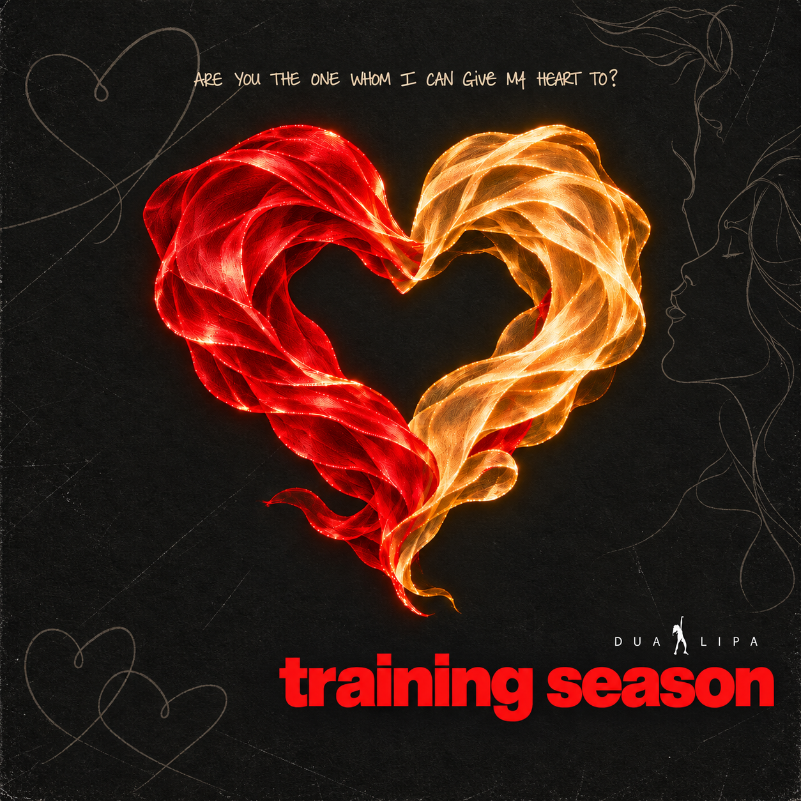
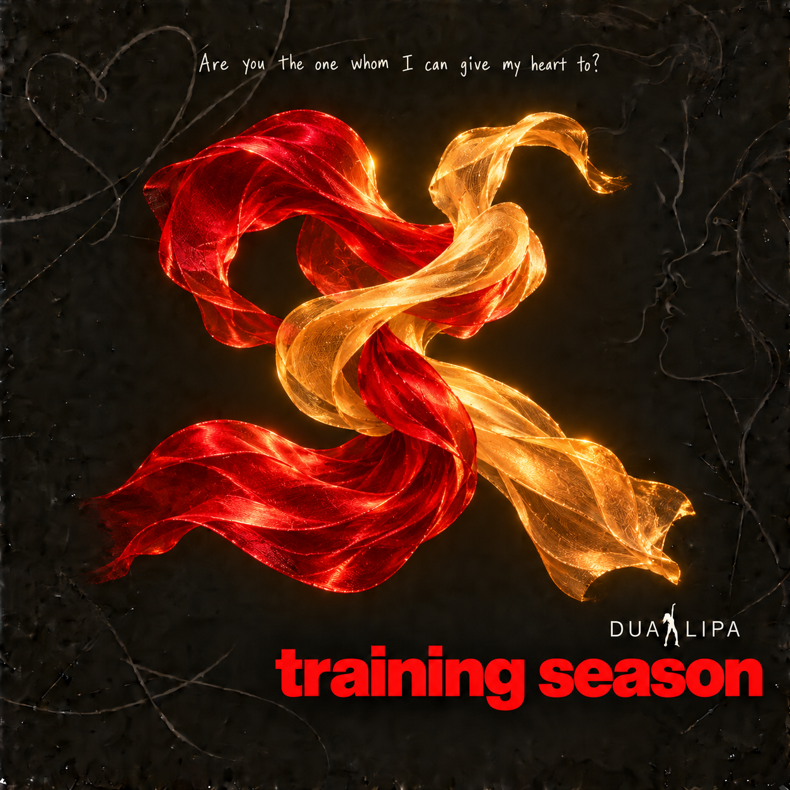

Image file pending. Add training-season.png to the assets folder.
Training Season.
An album cover about self-belief, emotional clarity, and the possibility of the right connection.
The concept
This reinterpretation of Dua Lipa’s Training Season explores the song through manifestation and a positive anticipation of love. The design brings two luminous red and gold ribbons together into a heart, expressing attraction, connection, and the hope of finding someone who feels right.
From idea to image
The creative process explored light and dark treatments, textures, heart motifs, and variations in typography. AI-assisted image development supported the exploration, while focused revisions shaped the composition, contrast, and emotional tone. The earlier design features freely intertwined ribbons against a heavily textured dark background. The final version gives those ribbons a clearer heart shape, with a more restrained background and subtle line drawings.
The final direction
The final cover pairs the glowing heart with a bold red song title, spaced artist lettering, and a handwritten question above. Fine heart outlines and a profile drawing add quieter details. The comparison below shows how the flowing ribbon experiment developed into a more focused symbol of connection.
From first thought
to final feeling.
Drag the divider to compare the early design with the final cover. The reveal also plays automatically.

Music plays quietly when this comparison comes into view. Use the sound button to turn it off.
Awaiting the earlier image and the final cover file.